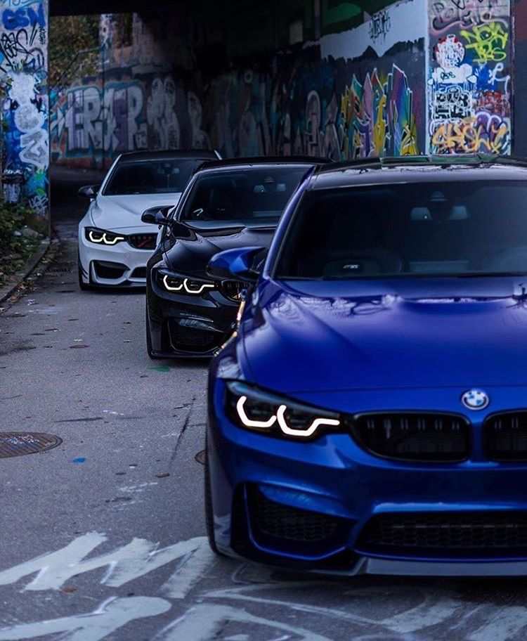
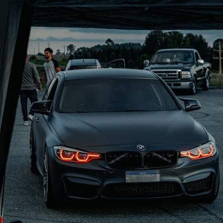

Mito: A bmw 320i é um carro inconfiável e financeiramente inviável. (A mecânica moderna é robusta; o custo alto vem de falta de prevenção).

Verdade: A bmw 320i Desempenha muito melhor do que a ficha técnica sugere. (O bom torque e o câmbio ZF deixam a pilotagem muito ágil).